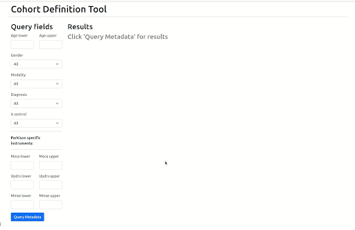

Cohort Definition Tool
The Neurobagel cohort definition tool allows users to search through and filter datasets that have been integrated into our harmonized metadata model and to define cross-dataset cohorts via the results.
Search results indicate the number of subjects and imaging modalities of the dataset. They can be filtered further via the following criteria: age, sex, imaging modality, diagnoses, control status, and the values of specific assessment tools/instruments.
Once finished with this process, users can then download a file containing the available (meta)data on the datasets and subjects returned by their search.
See the animated demo of our user interface below!
